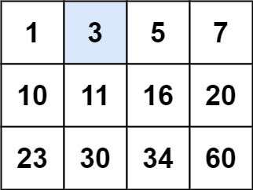
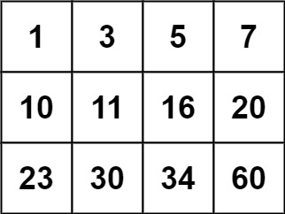

74. 搜索二维矩阵
行首大于上行尾，矩阵按行拼平就是一条一维有序数组：对下标 [0, m*n) 做一次标准二分。
思路
- 别按行列两次二分：整体当一维有序数组，
lo=0、hi=m*n-1，一次二分就够。 - 一维下标
mid折算回格子：row = mid / n，col = mid % n，取值比较。 v == target命中；v < target说明左半不要，lo = mid + 1；否则hi = mid - 1。lo > hi还没命中就不存在；(lo + hi) >>> 1防溢出。
图解
最优解
1class Solution {2 public boolean searchMatrix(int[][] matrix, int target) {3 int m = matrix.length, n = matrix[0].length;4 // 行首大于上行尾：拼平就是一维有序数组，对 [0, m*n) 一次二分5 int lo = 0, hi = m * n - 1;6 while (lo <= hi) {7 int mid = (lo + hi) >>> 1;8 int v = matrix[mid / n][mid % n]; // 一维下标折算回 (行, 列)9 if (v == target) return true;10 if (v < target) lo = mid + 1;11 else hi = mid - 1;12 }13 return false;14 }15}题目
给你一个满足下述两条属性的 m x n 整数矩阵：
- 每行中的整数从左到右按非严格递增顺序排列。
- 每行的第一个整数大于前一行的最后一个整数。
给你一个整数 target ，如果 target 在矩阵中，返回 true ；否则，返回 false 。
你必须编写一个时间复杂度为 O(log(m * n)) 的解决方案。
示例 1：

输入：matrix = [[1,3,5,7],[10,11,16,20],[23,30,34,60]], target = 3 输出：true
示例 2：

输入：matrix = [[1,3,5,7],[10,11,16,20],[23,30,34,60]], target = 13 输出：false
提示：
m == matrix.lengthn == matrix[i].length1 <= m, n <= 100-104 <= matrix[i][j], target <= 104
题面取自力扣当前版本。
数据快照 2026-11-04。题面版权归力扣所有，本站点仅供本人学习使用，请勿对外发布。